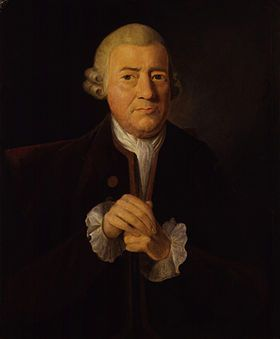

 Baskerville được thiết kế vào năm 1754, được biết tới phổ biến bởi các cạnh sắc nét, tương phản cao và tỉ lệ hài hoà. Mặt chữ có ảnh hưởng lớn từ John Baskerville, một chuyên gia về chữ và một người làm in ấn, người đã đạt được nhiều thành tựu ngay từ khi bắt đầu. Baskerville vượt ra ngoài những gì đang diễn ra với công nghệ in ấn lúc bấy giờ. John Baskerville phát triển phương pháp làm việc riêng, đem lại một loại giấy đẹp và một loại mực đậm hơn. Ông tạo một loại mực màu đen mạnh mẽ bằng cách đun sôi dầu hạt lanh cho tới một độ đặc nhất định, hoà tan nhựa thông, và để nhiều tháng cho tới khi nó đóng lại và cuối cùng mài nó trước khi sử dụng. Các nhà in ấn, chẳng bao giờ tiết lộ phương pháp của họ, và chỉ sử dụng với sản phẩm tại cửa hàng của chính mình, Vì vậy Baskerville theo sát những người đồng nghiệp với hy vọng tạo ra một sản phẩm tương tự. Thói quen này giúp ông phát triển tiêu chuẩn cao hơn cho công nghệ ấn bản.
Trong khi cuộc đời của John Baskerville có ít thành công, thì kiểu chữ ông tạo ra lại có ảnh hưởng vô cùng to lớn tại Châu Âu sau khi người vợ của ông bán những khuôn in của Baskerville và nó có mặt trong các xưởng in khác nhau.Isacc Moore từ xương in Bristol tự làm ra Baskerville năm 1766, Bell và Scotch Roman cũng ảnh hưởng bởi sự sắc nét của Baskerville roman. Sự ngưỡng mộ kiểu chữ này lan ra tại Pháp và Ý, và sự tương phản của Baskerville có thể thấy trên những mặt chữ hiện đại như Didot và Bodoni. Nhà thiết kế chữ người Mỹ, Bruce Rogers, khám phá ra Baskerville nằm trong quầy sách tại Cambridge năm 1917, và ông giới thiệu kiểu chữ này cho Harvard University Press, ông nói rằng đó là kiểu chữ này được tạo nguyên mẫu từ kiểu Baskerville trong ma trận các kiểu chữ tương tự, khiến nó hồi sinh lại trong thập kỷ 20. Năm 1996, Zuzana Licko thiết kế một kiểu chữ Baskerville hiện đại, lấy tên là Mrs, Eaves – đặt tên theo người vợ của ông. Với việc tái tạo một kiểu chữ với độ mở tương tự và cảm giác sáng sủa mà Baskerville có, Licko sử dụng x-height nhỏ tương tự với cap-height và tương phản cao trong các nét. Baskerville phổ biến với các ảnh hưởng thư pháp và sự uống lượn, và Licko cũng thêm vào rất nhiều ligatures vào Mrs. Eaves nhằm bắt chước phong cách. Trong một cuộc phỏng vấn năm 2002, Licko diễn giải rằng đó là sự hồi sinh các kiểu chữ cổ điển như Baskerville, nó ảnh hưởng lên ý tưởng của ông về hình dáng chữ trong các phông như Tarzana và Solex. Baskerville là một mặt chữ độc đáo khi xuất hiện trên sách, và nó là sáng tạo của John Baskerville theo cách đối xử đó, nó có thể sắp xếp ngay ngắn rất trực quan. Ngày nay nó tiếp tục là kiểu chữ phổ biến nhất và vô cùng cổ điển cho in ấn, nó dễ đọc và tuyệt đẹp.